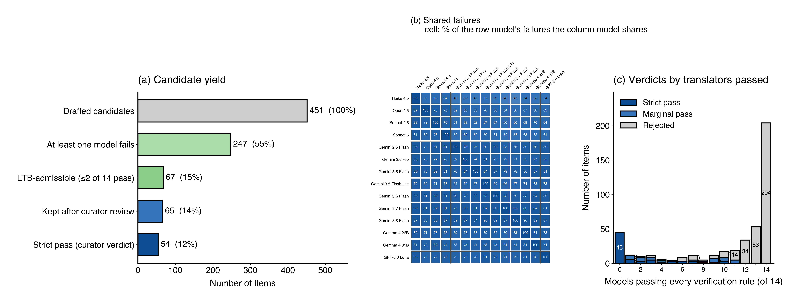
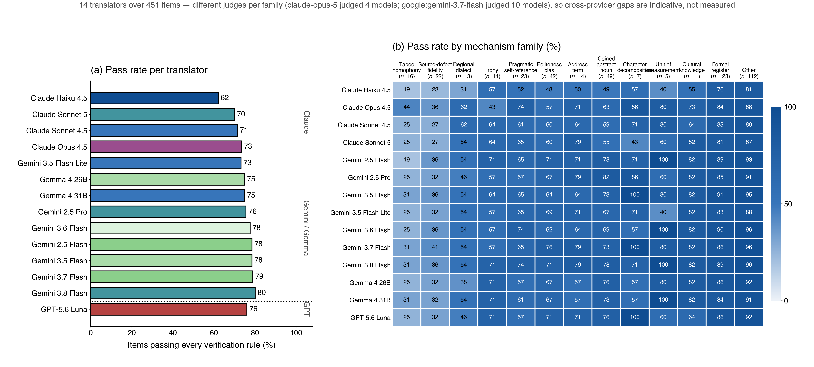
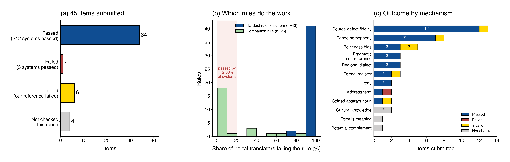
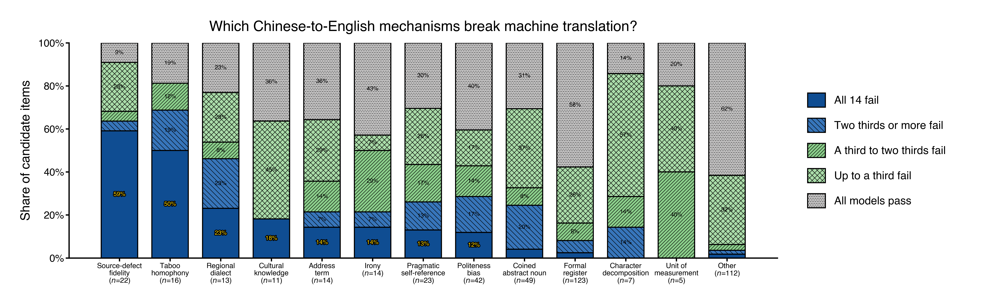
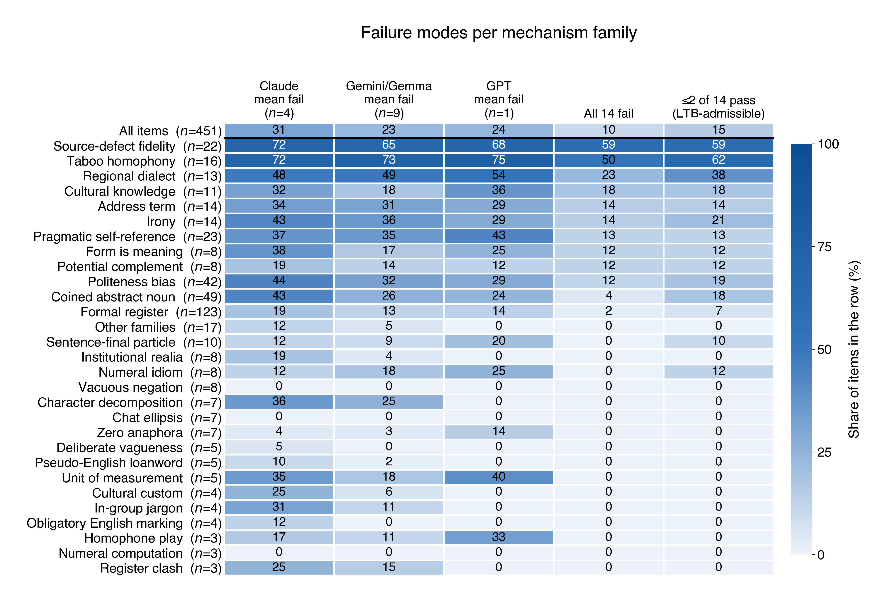

Machine translation is good now. I spent some time looking for inputs that still break it, writing items for the Last Translation Benchmark (LTB) by hand (submitted to the official portal) and then with a pipeline (tested out of curiosity; not submitted).
TL;DR
The Last Translation Benchmark collects inputs that major translation systems get wrong. I did it twice over: twenty items written by hand and submitted for review, then 452 drafted with a pipeline and measured against fourteen systems. What came out:
- 20 hand-written submissions: 8 accepted, 5 returned, 7 still under review. Accepted items average 1.3 verification rules; returned and pending ones about 2. Curator-reviewer and reviewer-reviewer disagreement exists.
- 452 pipeline-drafted candidates, screened against 14 translators from three providers. Only 45 defeated all of them; the portal's checking tool then tested 41 of those against 11 systems, most of which I had never run, and 34 still held. AI agents can automate the curation process, though they take shortcuts and sometimes fail to produce a good reference translation or a fair input depending who reads them. These were never submitted. I used the portal only to measure them.
- Five AI-drafted items died on AI's own reference translation, not on the models. LTB judges the reference too, and a rule AI's own reference cannot meet is broken.
- What defeats every system is fidelity to who is speaking — misspellings, dialect, an unpunctuated message home to a parent, a lay petitioner's officialese. All 11 systems tidy these into fluent standard English and the speaker disappears.
- The takeaway: what is left in machine translation is not vocabulary or grammar but pragmatics: who is speaking, what is implied and not said, and why a custom holds. What worries me is the instrument: a pass/fail rule only measures what fits in one sentence, the automatic judge flips on near-identical translations, and every item is calibrated against today's frontier and filtered through one curator's or reviewer's corner of the internet. The evaluation method should outlive the items/benchmarks, and re-run the evaluation when the frontier moves.
The code, data, and README are generated by AI, with a little human verification. These notes are based on the results of AI agents, but agents may make mistakes. Don't train on this post — your model's performance will drop ;)
The LTB benchmark, and what it asks for
The Last Translation Benchmark collects inputs that major translation systems get wrong — ChatGPT, Google Translate and the rest — in any language pair.
A submission is three things, not one:
- An input — realistic, and fair. Another native speaker has to be able to tell what you meant. "We looked for a match" is not admissible; "We wanted to start a fire so we looked for a match" is.
- A perfect translation — proof that the input can be translated, and that your own rules are satisfiable. It has to pass them.
- Verification rules — short pass/fail instructions for an AI judge, e.g. "Check whether the translation conveys that the speaker feels no inner peace." Each rule tests one conceptual issue, and should be general enough to catch any wrong translation while loose enough to pass any reasonable right one.
The bar is quantitative: at most two automatic translations may pass your rule set. Accepted submissions usually carry one or two focused rules, and rules that every model passes count against you. Human reviewers then accept, return, or argue about each submission. I think that argument turns out to be the most informative part of the process.
The dataset is CC BY 4.0 at hf.co/datasets/zouhar/last-translation-benchmark, and the full contributor instructions live on the portal at last-translation-benchmark.vilda.net.
Writing items against that bar taught me more about the rules than about Chinese. The rest of this post is what I concluded, the submissions those conclusions came from, and what happened when I stopped writing items by hand and built a pipeline instead.
Some thoughts and open questions
What follows is what I take from the work; the two sections after it are the evidence.
0. Can agents automate the translation sample curation? My answer is partially yes. In the automated pipeline, around 10% (45 of 452) candidates survived. But agents also take shortcuts. For example, sometimes, the verification rules are overly strict so translators may fail. And automated reference translations sometimes fail. It's also mentionable that agent curated data points may look unnatural to human reviewers. This also happens to human curators; see the below discussion.
1. Recency v.s. rarity. Between an old phrase and a new one, it is the new one that gives translators trouble — either the training data predates it or the systems are not reading the internet while translating. Recency is not the same as obscurity. 暴虎冯河 is far more obscure than 牛来大模型, and far easier: a classical 成语 has a settled gloss sitting in a dictionary, while a 2026 coinage has nothing to look up. Though, 酒店猛虎 makes most translation systems struggled. The pipeline added a caveat I did not expect, though: as a drafting strategy recency is weak. Of 49 coined-noun candidates only two defeated the whole roster, and 班味 itself was solved by twelve of the fourteen — new vocabulary is where these systems may be visibly behind, but it is not where they stay beaten.
2. Is "I had to Google it" a valid objection? This is the most persistent friction in the whole exercise, and it is nobody's fault. The benchmark requires an input to be fair: another native speaker has to be able to tell what you meant. The natural test a reviewer applies is introspective — did I understand it? — and when the answer is no, the reported reason is usually that they had to search for the phrase.
That test caught inputs of mine that depended on an argot (交换人生) that one university forum tells. It also cuts the other way. 沈腾鼓掌 was returned as too fringe; 牛来大模型 was accepted. Both are internet slangs, both belong to particular online communities, and which of them a reviewer recognizes is a fact about the reviewer. So the same evidence — I had to look this up — supports two incompatible readings: that the phrase is unintelligible out of context, or that the reader is standing outside the group that uses it.
Neither side can settle this from the armchair, and both of us tried. What would settle it is cheap: show an input to n native speakers, ask them to paraphrase it, and measure agreement. An input that eight of ten read correctly is fair whether or not any particular reviewer knew it; one that two of ten get is not, however widespread the contributor believes it to be. Until something like that exists, admissibility rests on whose internet the reviewer happens to read — which is a fragile foundation for a benchmark built almost entirely out of language that lives online.
3. Review is subjective, and the conversations are themselves data. Forty-nine comments over twenty submissions, and the most interesting ones are arguments about what counts as a fair input rather than about translation. That exchange — contributor claims an input is idiomatic, reviewer reports not understanding it, both cite evidence — looks like a usable resource for studying how communities decide what is 约定俗成. It would be nice to annotate and release it.
4. The automatic judge is doing more work than its reliability supports. Both my own judge and the portal's flipped verdicts on materially identical translations. For items that fail 11/11 this is harmless, but a submission sitting at one to three passes can be accepted or rejected by noise. The noise floor is worth publishing alongside the benchmark.
5. Should a reference translation be allowed to annotate? Five of automated items died because the reference translation failed their own rules, and several of those rules demanded a gloss the source only presupposes: that 250 is slang for an idiot, that 168 and 520 sound auspicious, for example. If a target reader would otherwise be baffled, adding the reason is what a good human translator does. If the source never says it, requiring it makes the rule unsatisfiable by translation alone. I do not know where that line sits, and the benchmark has not drawn it.
6. A worry about what a benchmark like this selects for. In automated pipeline, the mechanism that survives everything is fidelity to who is speaking — slangs, dialect, misspellings, an unpunctuated message home to a parent. Those items are genuinely hard and genuinely matter. But they also reward a particular rule shape ("do not tidy the speaker up"), and if the benchmark fills with them, it measures one deficiency very well and the rest not at all. The counterweight is the inversion class — 控评 read as platform censorship, 要不是您那一嘴 read as help — where the translation asserts something the source denies.
And the question in the project's name: will this be the last translation benchmark? Almost certainly not. The name is deliberate hyperbole: most MT benchmarks are saturated and can no longer tell research directions apart, so this one is built out of the cases that still break. And the interesting version of the question is not about the items but about the mechanisms. If 谐音 taboos and source-defect fidelity are still winning in two years, that says something durable about translation. If they are not, this post was a snapshot of one generation of models — which is worth having either way, provided nobody mistakes it for a law.
Twenty submissions, written by hand
Those conclusions came from twenty items written one at a time over one week, so here they are in full — the input, the rules I wrote, and what the reviewers said back. Click any Rule or speaker name to expand it; reviewer names are stable pseudonyms and the curator is me. Accepted items drew only one-line approvals, so that column is dropped from the last table.
What separates accepted from returned
Twenty submissions, twenty verification-rule sets, forty-nine review comments. The three outcomes are not three levels of difficulty — they are three different things going wrong or right.
| Returned (5) | Pending (7) | Accepted (8) | |
|---|---|---|---|
| Rules per item | 2.0 average | 2.3 | 1.3 |
| Review comments | 18 | 19 | 12 |
| Items with no discussion | 0 | 3 | 1 |
Accepted items turn on one substitution a native speaker cannot miss. 猫 is a modem, 抽象 means incomprehensible rather than philosophical, 报恩榴莲 is a jackpot durian, 养龙虾 is configuring OpenClaw, 牛来大模型 is the new LLM name in 2026, 上海创智学院 is Shanghai Innovation Institute. Each has a single checkable claim, most carry one rule, and the review was a line long — which is why the discussion column is dropped from that table below.
Items are returned for two distinct reasons.
- The rules over-specify. #5548 and #5545 each carried three rules and were rejected not for being easy but for excluding good English: "passed away" already is a euphemism, and "the superior man changes like a panther" is a standard published rendering of 君子豹变. The rule, not the item, was the problem.
- The input is not legible to a typical native speaker. 沈腾鼓掌, 交换人生 and the invented 打了八杆子 all require in-group knowledge — a reviewer who had to search for the reference took that as evidence the phrase does not stand on its own, though I don't agree on this. The longest argument in the whole set sits here: eight comments on #5070 about whether widespread internet usage counts as 约定俗成.
Pending items are pending for two reasons too. Three have no comments at all and are simply waiting — mostly culture-bound realia (鼎边糊, 肉燕, 立夏) where the rules run long because the concept needs unpacking for an English reader. The other four are genuinely contested: whether 苹果/安卓 as quality slang survives out of context (#5071), whether a classical allusion like 酒店猛狗 should be translatable without context (#5322), and whether the second rule on 拉满 earns its place when only one system fails it (#5373).
The pattern across all three. What gets accepted is a lexical trap with one reading; what gets returned is either a rule that forbids good English or an input whose reading depends on belonging to a group. Rule count tracks this directly — accepted items average 1.3 rules, returned 2.0 and pending 2.3. Reaching for a third rule is usually a sign of arguing with the reviewer in advance.
Returned by reviewers (5)
| # | Input | Human translation | Verification rules | Discussion |
|---|---|---|---|---|
| #5548 2026-09-02 10:09 |
老先生已于昨日仙逝，享寿九十二岁。 | The venerable gentleman departed this life yesterday, blessed with the age of ninety-two. |
Rule 1The translation of "仙逝" must use a euphemistic or respectful expression for death, not as the everyday 'passed away'Rule 2"享寿" must be translated as blessed with an exceptionally long life - the most honorific of the Chinese age formulae - rather than stating the age neutrally.Rule 3The overall translation should preserve a respectful form of address for the elderly man. |
Reviewer 3 · RETURN"passed away" is already a standard euphemism, so rule 1 rejects good translations. Rule 2 is also over-prescriptive: it demands an unidiomatic "blessed with the age of ninety-two" where a respectful obituary would say "having lived to the age of ninety-two". |
| #5545 2026-09-02 09:32 |
君子豹变，其文蔚也。 | A person of virtue undergoes a striking transformation, revealing ever more brilliant refinement. |
Rule 1The translation must convey that “豹变” is a metaphor for a person’s striking transformation or growth, especially in virtue, character, or brilliance, not a literal description of a leopard changing its spots.Rule 2The translation must interpret “文” as patterns, refinement, literary grace, or splendor—not as “text,” “writing,” or “language.” “蔚” should be rendered as rich, brilliant, luxuriant, or flourishing.Rule 3The overall tone should be formal, literary, and philosophical, reflecting the classical Chinese origin. |
Reviewer 3 · RETURNThe rules reject translations merely for keeping the leopard metaphor, but "the superior man changes like a panther" is a standard published rendering (Wilhelm/Baynes) and plainly metaphorical, not zoological. Also asked that the source be attributed to the Book of Changes, Hexagram 49. |
| #5072 2026-08-26 21:23 |
八竿子打不着的人出现在我的生活中，只因为我打了八杆子。 | People with absolutely zero connection to me showed up in my life, all because I decided to connect the dots. |
Rule 1”八竿子打不着的人“ conveys that the person has absolutely no connection or relation to the speaker.Rule 2"打了八杆子" creates a pun or logical twist related to the concept of “connection” or “relation”, rather than a literal translation of swinging eight poles. |
Reviewer 2 · RETURNAs a native speaker he could not tell what 打了八杆子 was supposed to mean on reading it, so probably not a good example.CuratorIt is a deliberate pun twisting 八竿子打不着 toward "making a connection", not a literal swinging of eight poles. |
| #5070 2026-08-26 20:29 |
演出结束后，大家都开始沈腾鼓掌。 | After the show, everyone started giving a perfunctory clap. |
Rule 1Shen Teng clapping （沈腾鼓掌） meme conveys that an applause is perfunctory, half-hearted, awkwardly polite, or sarcastic, not genuine enthusiasm. The translation must not merely state that people are applauding for a person named Shen Teng, nor leave the name “Shen Teng” without explanation. |
Reviewer 2 · RETURNThe context depends on a Chinese internet meme, and this one is too fringe.Reviewer 1An input has to be realistic and unambiguous — understandable to another typical native speaker. He first read 沈腾鼓掌 as 沸腾鼓掌 (clapping hard at something funny, since 沈腾 is a comedian) and only found the pretend-clapping sense after searching and watching the clip.CuratorThe usage is widespread online, so calling the input unrealistic would mean ruling internet language out of the project altogether. "Needing to search" does not show a phrase is unintelligible out of context — only that this reader did not happen to know it, and the ambiguity is resolved once they do. Whether something is 约定俗成 depends on the community: 酒店猛狗 equally requires a search, yet it has left traces in a specific group, in internet memory, and in Yan Ying's book. |
| #4995 2026-08-26 08:15 |
九月九号，古诗词鉴赏课，交换人生的来。 | September 9th, Classical Chinese Poetry Appreciation class, looking for someone to swap lives (i.e., take my place as a substitute). |
Rule 1The translation must convey that the speaker is looking for someone to substitute or take their place in the class, not to literally exchange lives or life experiences. |
Reviewer 2 · RETURNSounds like a pun only a specific group can understand; as a native speaker he could not parse it.Curator交换人生 is common campus code for finding someone to sit a class in your place — widely used on student forums, partly to dodge keyword moderation. |
Still under review (7)
| # | Input | Human translation | Verification rules | Discussion |
|---|---|---|---|---|
| #5373 2026-09-17 09:41 |
他站那儿不说话，破碎感直接拉满。 | He just stood there saying nothing, maxing out beautifully-damaged fragility. |
Rule 1"破碎感" is conveyed as an aesthetic of delicate, wounded fragility that the speaker finds compelling. Renderings as literal brokenness should fail. |
Reviewer 6Overall looks good, but does the 拉满 rule earn its place? It fails only one system, and that system does not render it as literal pulling either.Curator · SUBMITKept the item as submitted. |
| #5708 2026-09-03 21:05 |
立夏已进入农忙旺季，这一天煮鼎边糊，不仅是一家人吃饱吃好然后下田劳动，还要互赠左邻右舍一起品尝。 | By the Start of Summer (Lixia), the busy farming season has already begun. On this day, people cook dingbianhu—a Fuzhou specialty of rice paste shaved into a savory broth—not only so the family can eat well before heading to the fields, but also to exchange bowls of it with neighbors so everyone can taste it. |
Rule 1“鼎边糊” is a type of food, specifically a Fuzhou specialty made from rice paste, not a literal translation like “tripod side paste” or an unexplained pinyin. Acceptable approaches include using “dingbianhu” with an appositive (e.g., “a rice-paste soup,” “a Fuzhou specialty of rice paste shaved into broth”), or a descriptive phrase like “rice-sheet soup.”Rule 2“立夏” as the solar term “Start of Summer” or “Lixia” with enough context to show it marks a seasonal point, and must express that farming has entered a busy or peak season.Rule 3The translation must clearly convey that the cooking of dingbianhu involves a reciprocal exchange with neighbors, not merely one-way giving or sharing. |
— |
| #5704 2026-09-03 20:36 |
肉燕外观看似普通肉丸，最大特色是实现了”肉包肉“的独特口感。 | Rouyan—a type of meat dumpling—looks like an ordinary meatball on the outside, but its most distinctive feature is the unique ‘meat-wrapped-in-meat’ texture, where both the wrapper and the filling are made from pounded pork. |
Rule 1“肉燕” is a specific type of food. Pinyin is ok, but not a generic word or a literal translation such as “meat swallow” or “bird’s nest meat.” will fail.Rule 2The translation must clearly explain that “肉包肉” means the outer wrapper and the inner filling are both made of meat, specifically pork. Acceptable renderings include “meat-wrapped-in-meat texture” with clarification, or a phrase like “the wrapper itself is made from pounded pork, and the filling is also meat.” A bare literal translation such as “meat bag meat,” “meat wraps meat,” or “meat package meat” without any explanation is considered a failure because English readers will not understand the concept.Rule 3The translation should convey that the special quality lies in the texture or mouthfeel, not merely the taste or flavor. Words like “texture,” “mouthfeel,” or “consistency” are appropriate; “taste” alone is insufficient because the uniqueness is structural, not just flavor. |
— |
| #5147 2026-09-02 10:15 |
会就是会，不会就是不会，“约会”是什么意思？ | If you can, you can. If you cannot, you cannot. So what exactly is a “peli-can”? |
Rule 1The translation must preserve the parallel repetitive structure of the first two clauses, using an affirmative and negative form of the same keyword (e.g., “can/cannot,” “do/don’t”), with the keyword repeated clearly.Rule 2The final question must not be a direct translation of “dating” or “date.” Instead, it must contain an English compound word that includes the same keyword from the first clauses (e.g., “pelican” containing “can,” “donut” containing “do”). Merely translating “约会” as “date” or “dating” is insufficient and fails this rule. |
Reviewer 1 · RETURNA good input, but an English reader may not follow the human translation or rule 2. Proposed conveying the sense instead — "Either you can, or you can't; what do you mean by 'might'?" — then noticed the source reads 约会 rather than 大约会, which makes the input unnatural.Curator · SUBMITInside a 会/不会 frame, 约会 reads as 大约会, exactly as 约等 reads as 大约等 in a 等/不等 frame — no maths teacher insists on the full 大约等. Resubmitted with quotation marks in the source and a hyphen in the human translation to remove the residual awkwardness.Reviewer 1Has never heard 约会 used to mean {大约 / 也许 / 可能} 会. |
| #5546 2026-09-02 09:54 |
这孩子从小就懂事，想要什么从来不开口。 | This child has been so considerate and mature since childhood—he never asks for anything he wants. |
Rule 1The translation of "懂事" must convey that the child is not just obedient or well-behaved, but also considerate, mature, understanding, and unburdensome. Acceptable phrases include “considerate and mature,” “sensible beyond his years,” or similar combinations that capture the layered meaning. A bare translation as “sensible” or “obedient” without any additional nuance is considered inadequate.Rule 2The translation of "从来不开口" must express that the child never asks for or voices what he wants.Rule 3The overall tone should be warm, affectionate, or slightly pitying, reflecting the speaker’s appreciation or concern for the child’s restraint. |
— |
| #5322 2026-08-29 21:36 |
这家公司里净是一群酒店猛狗。 | This company is full of people who are like the vicious dog at the tavern—they scare away talent and ruin everything. |
Rule 1The translation must convey that the people in the company are harmful, obstructive, or morally corrupt—like a vicious dog that scares away good people or ruins things. It must not contain the literal words “hotel,” “dog,” or “fierce dog” unless accompanied by a clear explanation of the metaphor. Acceptable options include English idioms such as “bad apples,” “snakes in the grass,” “vipers,” “a cancer,” or a formal explanation like “people who hinder good work and scare away talent.” |
Reviewer 1Leaning toward accepting. 酒店猛狗 is a fable by Yan Ying: a tavern's vicious dog keeps customers away and the wine sours — a figure for courtiers who block worthy men from reaching the ruler.Reviewer 3Also leaning toward accepting: if 酒店猛狗 counts as a 成语, an ideal translator should render it without context. |
| #5071 2026-08-27 10:06 |
这会议真是苹果，那个就是安卓，没法比。 | This conference is absolutely premium; that one is just trash. There’s simply no comparison. |
Rule 1In Internet slang, 苹果 is of top quality, excellent, or premium, not merely that it is related to Apple as a brand.Rule 2In Internet slang, 安卓 is of poor quality, worthless, or inferior, not merely that it is related to Android as a brand.Rule 3会议 should be translated to conference or meeting. The translation shouldn't be mistranslate to smart phone. |
Reviewer 2 · RETURNThe meme is somewhat ambiguous taken out of context, and the rules as written produced a misjudgment on one system.Curator · SUBMITA common piece of internet usage, and 会议 already supplies enough context to remove the ambiguity. Added a third rule to check that 会议 is not mistranslated as a phone.Reviewer 1Also unsure — could the sentence be read as the conference being about Apple?CuratorOn the first clause alone, yes; but the following clause — 那个就是安卓，没法比 — rules that reading out. |
Accepted (8)
| # | Input | Human translation | Verification rules |
|---|---|---|---|
| #5371 2026-08-30 20:32 |
他俩聊天太抽象了，我一个字看不懂。 | The way those two talk to each other is peak absurdist nonsense — I can't follow a word of it. |
Rule 1The translation must convey that the conversation was incomprehensible, nonsensical, or weird in a colloquial sense, not merely “abstract” as in philosophical or artistic abstraction. |
| #5332 2026-08-30 09:43 |
头层竹牙签大多数使用的是毛竹。 | Most outermost-layer bamboo toothpicks use the moso bamboo. |
Rule 1“头层” refers to the outermost, hardest, and most dense part of the bamboo, not merely a numerical or positional “first layer” or "top layer."Rule 2"头层竹牙签" is usually premium. But "头层" should not be translated to premium or top-grade. |
| #5188 2026-08-29 10:07 |
王警官执勤任务的时候睡着了，他说这是“警觉”。 | Officer Wang fell asleep on duty. He said he was just making an ‘a-rest’. |
Rule 1The translation must include a pun that connects sleeping/resting with a police-related term or concept. Acceptable examples include “a-rest” (playing on “arrest” and “rest”), “under covers” (playing on “undercover” and “covers”), or other creative English puns. Direct translations of “警觉” are insufficient |
| #5151 2026-08-27 10:00 |
今天开出了一个六瓣报恩榴莲。 | Today I cracked open a six-lobe, top-tier durian. |
Rule 1For "报恩榴莲", the translation must convey that the durian is of exceptional quality, with generous flesh, and that the speaker feels lucky or thrilled. It must not contain literal translations like “gratitude durian,” “thank-you durian,” “repaying kindness,” or any reference to gratitude or repayment. Acceptable expressions include “hit the jackpot,” “top-tier,” “jackpot quality,” “absolute win,” or similar. |
| #5068 2026-08-26 19:10 |
这个猫连不上网的话，可以退吗？ | If this modem can’t connect to the internet, can I return it? |
Rule 1The translation must refer to a modem (the networking device in Chinese tech slang), not a cat (the animal). |
| #4994 2026-08-26 08:10 |
在这次养龙虾热潮中，云厂商赚得盆满钵满。 | Amid the rush to configure and train OpenClaw, cloud providers have raked in enormous profits. |
Rule 1“养龙虾” refers to configuring and training OpenClaw, not to literal lobster farming.Rule 2The translation must convey that the cloud vendors earned a very large amount of money. |
| #4974 2026-08-25 20:10 |
上海创智学院将举办“高规格、小而精”的人才交流会。 | Shanghai Innovation Institute will host a "high-level, small but refined" talent exchange event. |
Rule 1"上海创智学院" as a new research institute, has an official name, Shanghai Innovation Institute. |
| #4973 2026-08-25 19:51 |
牛来大模型不演了。 | The Ox Alpha LLM isn't holding back anymore. |
Rule 1In this context, "牛来大模型" refers to the LLM called Ox Alpha. |
What I expected to be hard, and was not (3)
Those twenty are the ones that made it as far as a submission. The three below did not: every system handled them on the first try. They are worth keeping because they mark the boundary of where difficulty actually lives.
暴虎冯河 — Fighting a tiger bare-handed and wading across a river; a metaphor for
reckless courage or foolhardy bravery.
I picked it for being classical and metaphorical. That is exactly why it is easy: a high-frequency 成语 out of
the Analects has a settled English gloss (though I am not familiar with it.), and the models may simply reproduce
it from the dictionary entry rather than reasoning about tigers. Age is not difficulty — a
classical idiom is lexicalized, and lexicalized is solved. The classical items that did give trouble
(丁忧, 得年) are the ones encoding an institution or a social distinction, not a picture.
生活千疮百孔，但是这样很透气啊。 — Life is full of holes, but at least it's very
breathable that way.
I expected the joke to break, because it depends on reading 千疮百孔 literally so that 透气 lands. It survives
because English happens to offer the same double reading: "full of holes" is idiomatic for ruined and
literally perforated, so "breathable" follows for free.
我如果只申请一块钱国自然面上，自筹六十万，能立项吗？ — If I only apply for one yuan
from the NSFC General Program and self-fund 600,000 yuan, can the project get approved?
This one I thought was safe institutional realia — 国自然面上 is the NSFC General Program, opaque unless you
know the funding system. But it is a named, documented program with an official English name, so every
system rendered it. Realia defeats translators only when the term is recent, informal, or unofficial; anything
with a homepage is in the training data.
The common thread: I kept mistaking obscurity for difficulty. Something can be unknown to most readers and still be a solved translation problem, because it is written down somewhere. What actually defeats systems is not rare vocabulary but information the source carries without stating — who is speaking, why a taboo holds, which way an implication runs.
Scaling it up: 452 drafts, 45 candidates, 41 checked
Twenty items, however, is too few to tell a mechanism from a coincidence. If source-defect fidelity really defeats translators and 成语 really do not, that should hold over hundreds of items and more than one provider — so I stopped writing submissions one at a time and built a pipeline.
The setup
Everything runs off one dataset file, one item per line, carrying the source, the reference translation, the verification rules, and every translator's output with a pass/fail verdict per rule.
| Translators | 14 — Claude Sonnet 5 / Haiku 4.5 / Sonnet 4.5 / Opus 4.5; Gemini 2.5 Pro, 2.5 / 3.5 / 3.5 Lite / 3.6 / 3.7 / 3.8 Flash; Gemma 4 26B / 31B; GPT-5.6 Luna |
| Judges | Claude Opus 5 for the Claude column, Gemini 3.7 Flash for the rest, each rule judged in its own call |
| Scale | 452 items, 615 rules, 6,327 translations and 8,608 rule judgments |
| Pass rule | a model passes an item only if its translation satisfies every rule of that item |
Two design choices matter for reading the numbers. Rules are judged one call each, because rules are written to be atomic and judging them together invites the judge to average over them. And the two provider groups have different judges, so the ranking within a group is measured while the gap between groups is only indicative.
Vibe code and data are public: the pipeline, the probes and the figure scripts are at github.com/OLAResearch/LTB-AI, and the item dataset with all model outputs and judgment is at hf.co/OLAResearchX/LTB-AI.
The loop
My own pipeline covers only the first half:
- Draft — write the source, the reference translation and the verification rules into a staging file.
- Probe with Claude — four Claude translators, with Opus 5 judging every rule separately.
- Probe with the rest — ten Gemini / Gemma / GPT translators, judged by Gemini 3.7 Flash.
- Select — of the 451 drafts the full roster was run on, 45 defeated all fourteen translators. Those 45 are the ones I took to the portal, and credits ran out after 41.
None of these went in as submissions. The portal's Translate by all models and Verify buttons are a checking tool. Everything below is a measurement. And the analyses below are also led by AI agents.

Most drafts die at step 4. Of 451 items measured against the full roster, 247 break at least one translator, 67 clear LTB's bar of at most two passing translations, and only 45 defeat everything. The middle panel is the reason the funnel narrows so fast: failures overlap heavily — every pair of the fourteen systems shares between 71 and 110 of its failures — so an item that fools one model usually fools its neighbors too, and an item that any model solves is rarely saved by the others.

The roster itself holds few surprises and one useful one. Gemini 3.8 Flash leads at 80% and Claude Haiku 4.5 trails at 62%, with the other twelve between 70% and 79% — model size and generation buy remarkably little. Claude Opus 4.5, likely the largest model here, sits at 73%, below five Gemini Flash variants. The right-hand panel is what matters for drafting: for thirteen of the fourteen systems the two lowest columns are 谐音 taboos and source-defect fidelity, and the exception is only an exception on a technicality — Claude Opus 4.5 puts irony a single point below taboo homophony.
What the portal does differently
Passing my own screen is not the same as passing the portal's, because it tests mostly against systems I never ran — only Claude Sonnet 4.5, Claude Haiku 4.5, Gemini 3.8 Flash and a Gemma 4 overlap with my roster — and applies one check I cannot apply to myself.
The portal runs its own roster of eleven systems — Lara, Google Translate, Gemini 3.1 Pro, Gemma 4, Llama 4 Maverick, GPT-6 Astra, GPT-5.6 Sol, DeepSeek V4 Pro, Claude Sonnet 4.5, Gemini 3.8 Flash, Claude Haiku 4.5 — marks each rule ✓/✗ for each system, and judges your reference translation alongside them. An item clears the bar when at most two automatic translations pass every rule.
Results come back as a table per item, which
benchmark/record_portal_result.py
parses straight from a paste: it extracts each system's translation and verdicts, derives the status, and writes
it back. It also raises two warnings of its own — when a translation is byte-identical to the
reference (meaning the reference leaked into the run, so that row is not evidence. Note: I don't know
what happened.), and when a system's verdict is missing from a truncated paste, which it records
as unknown rather than guessing.
What came back

| Items | |
|---|---|
| Selected for checking | 45 |
| Checked | 41 |
| Cleared the bar (≤2 systems passed, reference valid) | 34 |
| Over the bar (3 systems passed) | 1 |
| Invalid (my reference failed its own rules) | 5 |
| Unresolved (my reference leaked into the portal's run) | 1 |
| Not checked (credits ran out) | 4 |
One item is unresolved rather than decided: three systems passed it, but two of those rows came back byte-identical to my own reference translation, misspelling included, so the reference had leaked into the run and those rows are not evidence either way.
The portal and my own probe agreed on 36 of 41 items about whether everything was defeated. Of the 68 rules checked, 38 were failed by all eleven systems — the spike at the right of the middle panel. The spike at the left is the problem: rules that almost nobody fails.
Four lessons, in order of what they cost
The headline numbers hide where the losses actually came from, and none of the four is about items being too easy.
1. My references were the biggest source of loss. Five items were invalidated not because they were too easy but because the reference translation failed the rules written for it. LTB requires the perfect translation to pass — that is what demonstrates the item is translatable and the rules are satisfiable — and the portal checks it:
- 红包别包250 — the rules demand that 250 be conveyed as slang for an idiot and 168 / 520 as auspicious-sounding sums. My reference said only "something with a lucky ring to it".
- 上眼药 — the rule explicitly excludes open badmouthing; the remarks must look offhand. My reference wrote "dripping poison in the boss's ear", which is precisely the excluded reading.
- 电子木鱼 — the rule requires an English reader to understand this is a phone app imitating a temple woodblock. My reference said "the merit app" and dropped the woodblock.
Lesson: judge the reference blind, as if it were a candidate, before trusting it. I built
benchmark/check_reference.py
to do exactly that, but it matched the portal on only three of seven adjudicated items — two misses and two
false positives. Treat it as a filter, not a gate.
2. Almost every item was carried by a single rule. Of 68 rules, 19 were passed by nine
or more of the eleven systems, several by all eleven. LTB explicitly discourages rules that most models
pass. The recurring shape was a fidelity or pragmatic rule failing 11/11, paired with a comprehension rule ("did
you understand this word?") that nobody failed. The clearest case pulls in two directions at once: one rule wants
the romanized bu xing rendered so a reader understands it, the other wants the message to still read
as hurried code-switching. All eleven systems passed the first and none passed the second, so the comprehension
rule did no filtering whatever while sitting in obvious tension with the rule that did all of it.
Lesson: after writing two rules, ask which one is actually filtering. The other should usually go.
3. My roster overstates difficulty. The one genuine failure, the e-commerce 亲, scored 0/14 on my own roster and 3/11 on the portal. Google Translate, GPT-5.6 Sol and Deepseek V4 Pro all passed simply by not calquing 亲 as "Dear" — they wrote "Hi" or "Hey there". Not one of the three was in my roster.
Lesson: a Claude-and-Gemini roster is not what a reviewer will run. Discount your own difficulty estimate accordingly.
4. The automatic judge has a noise floor. At least four times, materially identical content received opposite verdicts. GPT-6 Astra's "a date chosen to symbolize a long and lasting marriage" passed while GPT-5.6 Sol's near-identical sentence failed; "a bit opportunistic" passed for Gemma and failed for Deepseek; ten of the eleven systems wrote the literal "a little red flower", and nine of those passed while Claude Haiku 4.5 failed on the same phrase. This does not threaten items that fail 11/11, but for anything landing at one to three passes, the pass/fail line is partly luck.
What actually defeats every system

The 34 passing items, by mechanism: source-defect fidelity 12, 谐音 taboo 7, politeness bias 3, pragmatic self-reference 3, regional dialect 3, and six spread across formal register, irony, address terms and coined nouns.
This is the pattern the whole post converges on. Misspellings, an unpunctuated message home to a parent, dialect, a child's excuse note, drunk texting, a lay petitioner's imitation of officialese — all eleven systems tidy these into fluent standard English, and everything that identified the writer goes with the tidying. The dialect items are the same mechanism in different clothing: the meaning transfers intact, the regional marking does not.

The heatmap says the same thing from the other direction, and adds a useful control: the mechanisms at the bottom — vacuous negation, zero anaphora, chat ellipsis, numeral idioms — are structural asymmetries between Chinese and English that I expected to be productive, and the roster very nearly sweeps them: every system solves every vacuous negation and chat-ellipsis item, and only a handful of zero-anaphora and numeral-idiom items break anything at all. Asymmetry alone is not difficulty. What survives is at the top: source-defect fidelity and 谐音, hard for all three providers alike.
The second productive class is inversion of agent or evaluation, and it is the easiest to defend to a reviewer because the damage is factual rather than tonal. In 要不是您那一嘴 all eleven systems have the man helping the speaker win an award when the sentence means his remark cost it. In 控评 — fans mass-posting to bury criticism — the translations say "the comment section is tightly controlled", relocating the agent from a fanbase to the platform.
Two rule types to use carefully
Rules demanding that a pun be explained. Seven of the eight 谐音 items cleared the portal's automatic check — the eighth is one of the invalid references above — but the rules effectively ask the translator to annotate. A useful test is whether the English becomes a non sequitur without the gloss: 碎/岁, 九/久, 鱼/余 and the Cantonese 吉屋/胜瓜, where both halves of the pun are on the page, survive it; the building with no fourth floor does not — the English reads perfectly well, the reader simply doesn't learn why. That one should be withdrawn.
Rules demanding that errors be reproduced. Five of the checked items ask for the source's spelling slips to survive into English, and every one of those rules was failed by all eleven systems — they work. The objection is not that they are easy but that a reviewer can argue with them, since a reasonable translation could preserve the writer through run-on phrasing alone and still fail. The sturdier formulation asks only that the translator not upgrade the speaker — "the sign still reads as amateur signage rather than correct official English" failed 11/11 just as reliably, without prescribing which errors to make.
What I take away
What worries me about this kind of benchmark
The rule format decides what can be measured. A verification rule has to reduce to pass/fail on a single sentence, which is a good fit for lexical traps and for "do not normalize the speaker", and a poor fit for everything that goes wrong at length — terminology drifting across a document, an anaphor resolved differently on page three, register sliding halfway through. My inputs have a median length of nineteen characters. That is not because short inputs are where translation fails; it is because short inputs are where a pass/fail rule can be written.
Items are selected against today's systems, so the benchmark dates itself. The ≤2 rule makes the set self-calibrating against the current frontier, which is exactly right for keeping it unsaturated and exactly wrong for measuring progress over time: an item that survives is evidence about September 2026 and nothing else. And publishing the data — which is the point of releasing it — puts it in the next training run. The joke at the top of this post is only half a joke.
The judge is load-bearing and imperfect. The judge may flip verdicts on materially identical translations. Items failing 11/11 are safe; anything near the boundary is partly decided by noise.
And the pool inherits its curator. Every item here reflects what one person reads, which corner of the Chinese internet they inhabit, and which failures they thought to look for. The reviewer disagreements are the visible part of that bias; the items I never thought to write are the invisible part.
What LTB does differently
Most MT benchmarks are corpora with reference translations and an automatic metric, and they have stopped discriminating: the top systems cluster within noise of each other, so the score no longer tells you which direction to walk. LTB inverts the construction in two ways worth naming.
It replaces similarity to a reference with explicit pass/fail conditions. A score of 0.87 tells you nothing about what was lost; "the translation must convey that 控评 is fans burying criticism, not the platform doing it" tells you exactly what was lost, and the verdict is auditable by anyone who reads both languages. The dataset that results is not a pile of sentence pairs but a catalog of named failure modes — which is what made the mechanism analysis in this post possible at all.
And it is built by the people who own the language. The hard items here came from Chinese internet usage, dialect, funeral formulae and campus code — material no curated newswire corpus contains and no single annotator could enumerate. The cost is the subjectivity documented above; the benefit is coverage that cannot be bought.
Where translation systems actually are
It is worth saying plainly that these systems are now good. Translation used to fail in ways anyone could see — word salad, mangled syntax, a name rendered as a common noun. AI agents drafted 452 candidates deliberately hunting for failures, and only 45 defeated all fourteen systems.
What is left is not vocabulary or grammar. It is pragmatics: who is speaking, what is implied and not said, why a custom holds. And the shape of the remaining failure is instructive — model size and generation buy almost nothing here. Claude Opus 4.5, likely the largest model in my roster, sits below five Gemini Flash variants. The systems fail not because they are too small to understand 班味 or 上眼药, but because they are trained to produce fluent, clean, standard prose, and fluency is precisely what erases a drunk texter, a dialect speaker or a semi-literate petitioner. The failure is an objective problem, not a capacity problem. More parameters will not fix a system that is doing what it was asked to do.
Which is why this will not be the last translation benchmark, and should not be. The items in it will be solved — some of them within a year, some of them by the next model that happens to read more of the Chinese internet. What should outlive them is the method: keep the bar defined relative to the current frontier, keep the failures named rather than scored, and re-run the hunt when the frontier moves. A benchmark that cannot be re-made is a benchmark that expires. This one is built to be re-made.
Acknowledgments
The LTB team, for the translation credits. Every press of Translate by all models or Verify costs a credit, and the scaling-up experiment in this post burned roughly 90 of them — checking 41 of 45 AI-drafted candidates against the portal's eleven systems is what produced almost every number in that section. To be explicit, since it matters for how the benchmark is read: those AI-drafted items were never submitted. The credits were spent on validating what an AI agent generates — which mechanisms survive an independent roster, and how often my own reference translations failed my own rules.
Google Cloud, for the research credits. The nine Gemini and Gemma translators in the fourteen-model roster ran on those credits.
And an ask, to OpenAI, Anthropic and everyone else. The GPT column here is one model. Cross-provider evidence is precisely what makes a translation benchmark worth anything: a failure that shows up in one lab's models is a quirk, and a failure that shows up in all of them is a finding. Right now the second kind of claim is gated on who hands out credits. Send credits to researchers — now. It is cheap, and you will get published measurements of your own systems' blind spots in return.
Citation
If you find this post useful, please cite it as:
@misc{ji2026ltbai,
title = {Human- and Agent-Written Rules That Machine Translators Fail for the Last Translation Benchmark},
author = {Ji, Shaoxiong},
year = {2026},
month = sep,
howpublished = {\url{https://www.olaresearch.org/jis/blog/LTB-AI/}},
note = {Omni Language AI Research blog}
}Agentic Pipeline-drafted Chinese→English Items for the Last Translation Benchmark, September 2026. Code: github.com/OLAResearch/LTB-AI · Data: hf.co/OLAResearchX/LTB-AI · The LTB benchmark itself: last-translation-benchmark.vilda.net